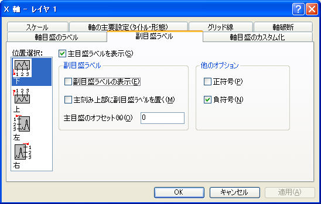

内容 |
| 水平方向 |
これは通常 (下または上の)X軸を表します。ただし、X軸とY軸を交換している場合(｢グラフ操作：X軸とY軸の交換｣メニューコマンド)や、グラフの種類が横棒、浮動横棒、積み上げ横棒の場合は(左または右の)Y軸を表します。 |
|---|---|
| 垂直方向 |
これは通常 (左または右の)Y軸を表します。ただし、X軸とY軸を交換している場合(｢グラフ操作：X軸とY軸の交換｣メニューコマンド)や、グラフの種類が横棒、浮動横棒、積み上げ横棒の場合は(下または上の)X軸を表します。 |
| Z軸 |
これは、デフォルトで、前Z軸および後Z軸です。 |
| 下 |
これは、デフォルトで、下X軸です (X軸とY軸を交換していたり、横棒グラフ系のグラフを編集している場合を除く)。 |
| 上 |
これは、デフォルトで、上X軸です (X軸とY軸を交換していたり、横棒グラフ系のグラフを編集している場合を除く)。 |
| 左 |
これは、デフォルトで、左Y軸です (X軸とY軸を交換していたり、横棒グラフ系のグラフを編集している場合を除く)。 |
| 右 |
これは、デフォルトで、右Y軸です (X軸とY軸を交換していたり、横棒グラフ系のグラフを編集している場合を除く)。 |
| 前 |
これは、デフォルトで、前Z軸です。 |
| 後 |
これは、後ろのZ軸を表します。 |
軸の属性を編集し終えたら、軸位置選択リストボックスから適切なアイコンを選択して、グラフの別の軸を編集することができます。選択した設定をグラフに適用するのをやめるには、編集中にキャンセルボタンをクリックします(適用ボタンを押す前に)
副目盛ラベルを表示するには、主目盛ラベルを表示しなければなりません。
『主目盛ラベルを表示』チェックボックスにチェックを付けると、軸の主目盛ラベルが表示されます。主目盛ラベルの表示の制御は、『軸目盛のラベル』タブや『軸目盛のカスタム化』タブからでも可能です。
『副目盛ラベルの表示』チェックボックスにチェックすると、副目盛ラベルが表示されます。(『主目盛ラベルを表示』チェックボックスにチェックされている時。)
『主刻み上部に副目盛ラベルを置く』チェックボックスにチェックすると、副目盛ラベルと主目盛ラベルの両方が軸の主刻み箇所に表示させます。このオプションは、主･副の目盛ラベルの種類が異なる時系列データの場合にのみ意味を持ちます。月と日の組合わせがその例です。
グラフに主･副両方の目盛ラベルを、重ならず共に見えるようにするには、『主目盛のオフセット(%)』テキストボックスにオフセットの値をパーセントで指定します。主目盛ラベルは、指定されただけページの中心から離れる方向に移動します。単位は、フォントの高さに対するパーセントです。